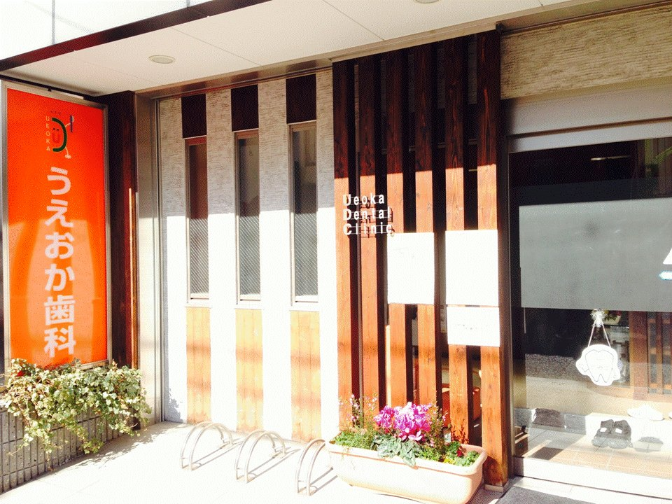
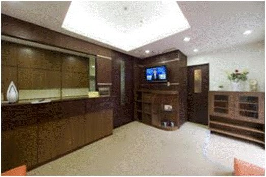
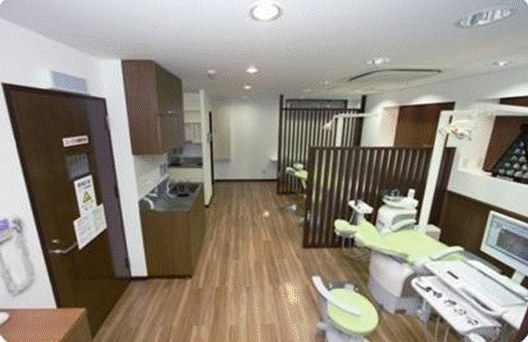

東大阪市 小若江 ・ 長瀬駅から徒歩5分
「痛くない、丁寧な治療」で安心。
悪くなる前に行く、あなたのための歯医者さん。
出来れば一生、ご自分の歯で食事がしたい。そう願う方の歯の健康を、予防とていねいな治療で支えます。
健康を守る、歯科のかかり方
歯医者は「痛くなったら行く」場所でした。しかし、むし歯や歯周病のような慢性の病気は、悪くなるたびに治療を繰り返していては、健康にプラスになりません。
うえおか歯科医院は、「痛くなる前に、悪くなる前に行く」場所として親しまれるよう努めています。
「ヤダヤダ怖い」歯科から、むし歯や歯周病にならないための、気持ちのよい予防やケアを行う「ニコニコ明るく楽しい」歯科へ。愛される笑顔いっぱいの歯科医院を目指しています。



治療方針
「患者様へ常に最善の治療をご提供する」
このモットーのもと、次の5つの方針で診療しています。
-
無痛治療
まず表面麻酔を行います。薬を塗るだけなので痛みはありません。感覚が鈍くなってから麻酔をします。電動麻酔を使い、歯科業界で一番細い針を使用しているため、治療中に痛みを感じることはほとんどありません。
-
歯をできるだけ残す治療
MI(ミニマルインターベンション)の考え方で、削る部分を必要最低限にとどめ、健全な歯質をできる限り残します。フッ素を放出する接着材料を選ぶことで、より小さな範囲の治療が可能になり、歯質の再石灰化も期待できます。
-
包括的治療
痛みの原因は、その歯だけとは限りません。お口全体に原因があるからです。原因を取り除き、放置すると近い将来悪くなる歯もあわせて治療することで、お口全体の健康を得られます。悪くなってから1本ずつ治療するより、健康な歯が長持ちします。
-
安心できる治療
一人ひとりの患者様に、丁寧な治療を行います。お口の状態をわかりやすくお知らせし、ご希望をうかがいながら進めます。これから行う治療や、その日に行った治療について、わからない点は遠慮なくご質問ください。
-
オーダーメイドの歯のクリーニング
当院では、すべての患者様に質の高いケアをお届けするため、お一人あたり45分〜60分の十分な時間を確保しております。お口の状態に合わせた最適なアプローチに加え、最新の「パウダーフロー」を導入。微細なパウダーと水の水流により、歯や歯ぐきを傷つけることなく、従来の器具では届きにくかった隙間のバイオフィルム（細菌の膜）や頑固なタバコのヤニ、着色汚れ（ステイン）まで優しくきれいに洗い流します。
うえおか歯科医院 院長 上岡 徹雄
診療案内
- 歯科
- 小児歯科
- 歯科口腔外科
- 審美
- 予防
- 訪問治療
- インプラント
各種保険を取り扱っています。診療内容について詳しくは、お電話でお問い合わせください。
診療時間・ご予約
| 診察時間 | 月 | 火 | 水 | 木 | 金 | 土 | 日・祝 |
|---|---|---|---|---|---|---|---|
| 9:00〜12:00 | ○ | ○ | × | ○ | ○ | ○ | × |
| 16:00〜19:00 | × | ○ | × | ○ | ○ | × | × |
臨時休診のお知らせ
ご予約について
- 当院は予約制です。患者様お一人につき30分〜45分、治療と予防の時間をしっかり確保して、丁寧な診療を心がけています。
- 歯のクリーニングは45分〜60分確保して一人ひとりに合ったクリーニングをしています。
- 予約のキャンセル、時間の変更、遅れる場合は、ご予定が分かり次第、早めにお電話でご連絡いただけると幸いです。
- 無断キャンセルや遅刻を繰り返された場合や、予約時間外に来られた場合は、しっかり診療時間を確保できないことがあります。急性症状があったり、診療の必要がある場合は除きます。ご了承をお願いいたします。
アクセス
- 住所
- 〒577-0818
東大阪市小若江4丁目11-26 メープルコート1階 - 最寄り駅
- 近鉄大阪線「長瀬」駅から、近畿大学方面に徒歩5分
- 電話